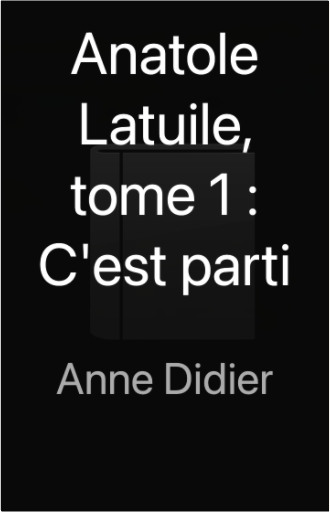
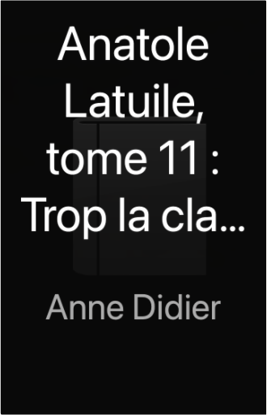
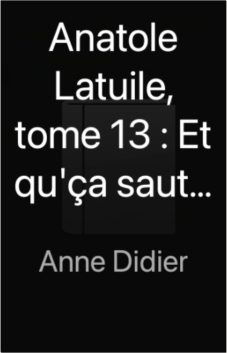

Julien
Collection Total:
2 100 Items
Last Updated:
Feb 15, 2025
Shelf:
Books
Movies
Albums
Videogames
Games
BD
BD Camille
Blu-ray
Business
Camille
Comics
Cooking
Lego
Manga
Pauline
Photography
Sport
Star Wars
T'choupi
Travel
TV Shows
Un livre dont vous êtes le héro
Vinyl
Walt Disney
24
25
26
27
28
yakari, tome 40 : l'esprit des chevaux
derib, chamblain
2803673738
yakari, tome 41 : le fils de l'aigle
derib, xavier giacometti
2803678926
un amour de petite soeur
astrid desbordes, pauline martin
2226324658
verte
marie desplechin
221123562X
loup solitaire, tome 4 : le gouffre maudit
joe dever
2070332977
la femme brouillon
amandine dhée

Anatole Latuile, tome 1 : C'est parti
Anne Didier, Olivier Muller, Clément Devaux
Anatole Latuile, tome 5 : Ultra top secret !
Anne Didier, Olivier Muller, Clément Devaux
Anatole Latuile, tome 6 : Pas de panique !
Anne Didier, Olivier Muller, Clément Devaux
Anatole Latuile, tome 7 : Ça va dégominer !
Anne Didier, Olivier Muller, Clément Devaux
Anatole Latuile, tome 9 : Ça déménage !
Anne Didier, Olivier Muller, Clément Devaux

Anatole Latuile, tome 11 : Trop la classe
Anne Didier, Olivier Muller, Clément Devaux

Anatole Latuile, tome 13 : Et qu'ça saute !
Anne Didier, Olivier Muller, Clément Devaux
Les idées folles d'Anatole, tome 2 : C'est du propre
Anne Didier, Olivier Muller, Clément Devaux
24
25
26
27
28

 Made with Delicious Library
Made with Delicious Library